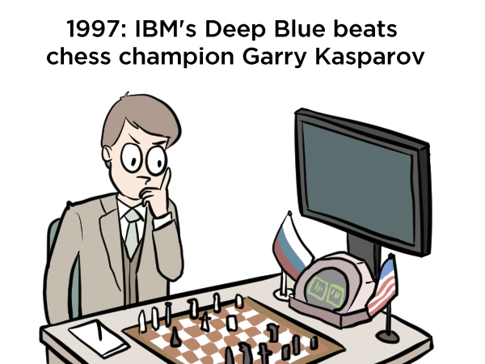
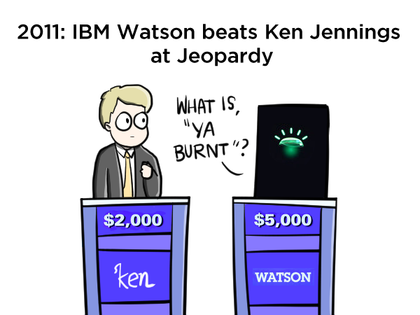
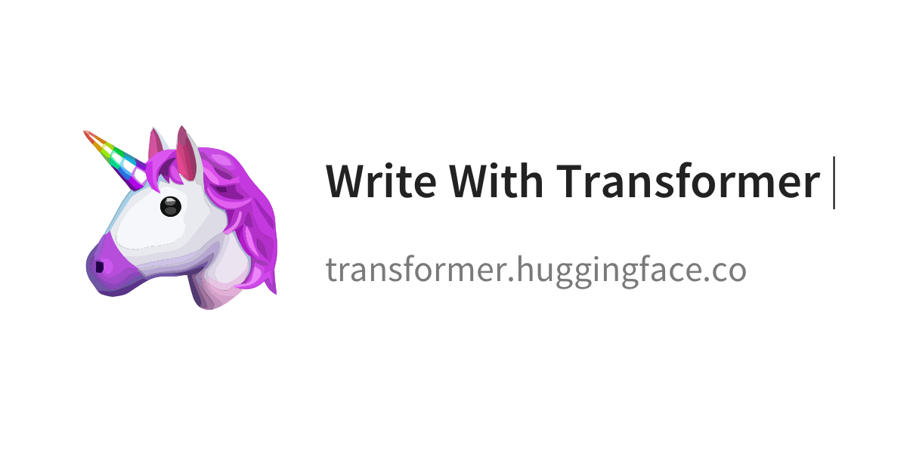
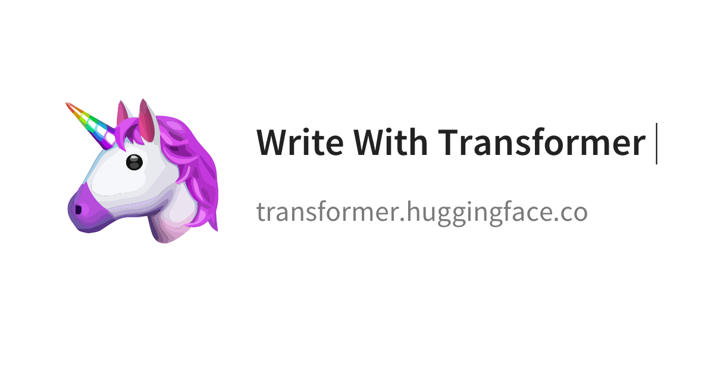

M3239.001100: 텍스트 및 자연어 빅데이터 분석방법론
108.535A: 컴퓨터언어학연구
I
Hyopil Shin (Graduate School of Data Science and Dept. of Linguistics, Seoul National University)
hpshin@snu.ac.kr, http://knlp.snu.ac.kr
Tue/Thur 3:30 to 4:45 in building 942 room 302
T.A: 이상아 (visualjan@snu.ac.kr)
 

(http://www.theverge.com/2016/3/11/11208078/lee-se-dol-go-google-kasparov-jennings-ai)
Course Description
이 과목에서는
자연언어처리(Natural Language Processing) 또는
컴퓨터언어학(Computational Linguistics)의 이론적인 기초에서부터 최근의
Transformers, BERT 기반의 방법론을 학습한다. 강의 전반부에서는 정규표현,
N-gram, Entropy, Embedding에 관한 내용이 다루어지며 후반부에는 Regression과
딥러닝, Encoder-Decoder, Attention 개념들의 리뷰를 하고 Huggingface의
Transformers의 사전학습모델과 모듈을 사용하여 자연언어처리에 활용하는 다양한 태스크를 실제
구현해 보도록 한다. 프로그래밍으로 Pytorch가 다루어지며 모든 과제는 토치를 기반으로 구현하도록
한다. 파이선 및 딥러닝 기본 지식이 요구된다. 이 수업을 통해 자연언어처리의 기본개념에서부터 최근의
방법론까지 학습하여 실제 언어처리에 활용할 수 있는 능력을 키우도록 한다.
Updates
- 강의는 줌을 기반으로 한 실시간 온라인 강의. 줌 url은 학기초 etl을 통해 공지됨
- Please set up python, pytorch, and colab for class!
Useful Sites
- Lectures
- Other Resources


Syllabus
| Date | Topics | Related Materials and
Resources |
PyTorch |
|
| 1 | 9/1 & 9/3 |
Introduction to Natural Language Processing
Regular Expressions, Text Normalization and
Edit Distance |
Natural
Language Processing is Fun! Regular Expressions, Text Normalization and Edit Distance |
PyTorch: |
| 2 | 9/8 & 9/10 | Regular Expressions, Text
Normalization and Edit Distance Language Modeling and with N-Grams |
Language Modeling and with N-Grams | |
| 3 | 9/15 & 9/17 | Language Modeling and with
N-Grams Entropy and Maximum Entropy Models |
Entropy
is a Measure of Uncertainty |
|
| 4 | 9/22 & 9/24 | Naive Bayes Classification
and Sentiment Linear Regression and Logistic Regression
|
Naive Bayes
Classification and Sentiment Linear Regression and Logistic Regression |
PyTorch: Linear Regression With PyTorch Logistic Regression With PyTorch |
| 5 | 9/29 | Vector Semantics and
Embeddings |
Vector Semantics
and Embeddings Notebook |
PyTorch:
|
| 6 | 10/13 & 10/15 |
Neural Networks Review for
NLP |
PyTorch: Sentiment Analysis (IMDB) |
|
| 7 | 10/13 & 10/15 |
Sequence Processing with
Recurrent Networks
|
PyTorch: |
|
| 8 | 10/20 & 10/22 | Encoder-Decoder
Review Attention Model Neural Machine Translation By Jointly Learning to Align and Translate |
PyTorch: |
|
| 9 |
10/27 & 10/29 | Transformer Self Attention: Attention is All you need The Illustrated Transformer |
|
PyTorch: |
| 10 |
11/3 & 11/5 |
BERT
(Bidirectional Encoder Representations
from Transformers)
|
BERT Fine Tuning BERT Fine-Tuning Tutorial with PyTorch BERT Word Embeddings Transformers by Huggingface and Full Documentation |
|
| 11 | 11/10 & 11/12 | Transformers
by Huggingface: Quick Tour Summary of Tasks : Sequence Classification, Extractive Question Answering, Language Modeling, Text Generation, Named Entity Recognition, Sumarization, and Translation |
Transformers
by Huggingface and Full Documentation
|
Group Projects and Presentations |
| 12 | 11/17 & 11/19 | Transformers by
Huggingface For Korean Naver Sentiment Movie Corpus KorNLI KorQuAD KoreanNERCorpus Naver NLP Challenge NER NLP Challenge SRL |
Huggingface Transformers Notebooks | Group Projects and Presentations |
| 13 | 11/24 & 11/26 | Transformers by Huggingface
For Korean Naver Sentiment Movie Corpus KorNLI KorQuAD KoreanNERCorpus Naver NLP Challenge NER NLP Challenge SRL |
|
Group Projects and Presentations |
| 14 | 12/1 & 12/3 | Transformers by Huggingface
For GPT Models OpenAI GPT-2 OpenAI GPT-3 |
GPT-3: Creative Potential of NLP | Group Projects and Presentations |
| 15 | 12/8 & 12/10 | Final Test and Project Presentations |